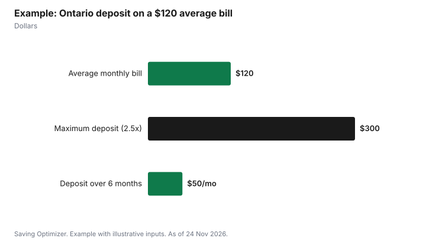

Utilities · Canada
New Home or Move-In Utilities in Canada: Deposits, First Bills, and Equal Billing Timing

When you move, call your electricity, gas and water providers 2 to 3 weeks ahead. Ask for a good-payment letter from your old utility before you close that account. In Ontario, that letter, a credit check, or signing up for pre-authorized payments can waive a security deposit.
Key takeaways
- Ontario electricity deposits are capped at 2.5 times your average monthly bill (OEB, checked 24 Nov 2026).
- A good-payment letter from any Canadian electricity or gas utility can waive the deposit.
- You can pay a required deposit over at least 6 months.
- Deposits come back after 1 year of good payment history.
- Wait for a few bills before starting equal billing.
How to avoid a deposit
| Option | What you do | Result |
|---|---|---|
| Good-payment letter | Ask your old electricity or gas utility | Deposit waived |
| Credit check | Provide one at your own expense | Deposit waived if satisfactory |
| Pre-authorized or equal payments | Enrol where your utility offers it | Deposit waived instead |
| Low-income waiver | Ask if you qualify for OESP or LEAP | Deposit waived |
| Pay the deposit | Spread it over at least 6 months | Returned after 1 year of good payment |
What lands on your first bills
- Account setup or connection charge on some utilities.
- A partial month, prorated from your move-in date.
- Estimated reads until the meter is read.
- Any deposit instalment.
- Water may be billed to the owner or included in rent.

When to start equal billing
Equal billing spreads a year of costs into equal payments. Without your own history, the utility guesses based on past bills at that address. Wait for a few months of bills, then sign up, and check the true-up each year.
Deposit math: an example
Example: if the average bill at your new address is $120, the maximum deposit is 2.5 times that, or $300. Over 6 months, that is $50 a month on top of your bills. A good-payment letter avoids it.
See equal billing, true-up surprises and moving your internet.
Sources
- Ontario Energy Board, Rules for electricity utilities: security deposits, checked 24 Nov 2026.
- Utilities Kingston, Residential security deposit requirements, checked 24 Nov 2026.
Frequently asked questions
Do I have to pay a hydro deposit when I move in Ontario?
Not if you provide a good-payment letter, a satisfactory credit check, or enrol in pre-authorized or equal payments where offered.
How much can an Ontario electricity deposit be?
Up to 2.5 times your average monthly bill.
When do I get my deposit back?
After 1 year of good payment history, or within 6 weeks of closing the account.
Should I start equal billing right away?
It is usually better to wait for a few bills first.
How early should I set up utilities?
About 2 to 3 weeks before moving.
Researched and drafted with AI assistance and fact-checked against official Canadian sources. How we create content.
Note: Not legal advice. Rules shown are Ontario's; other provinces differ. Education only.